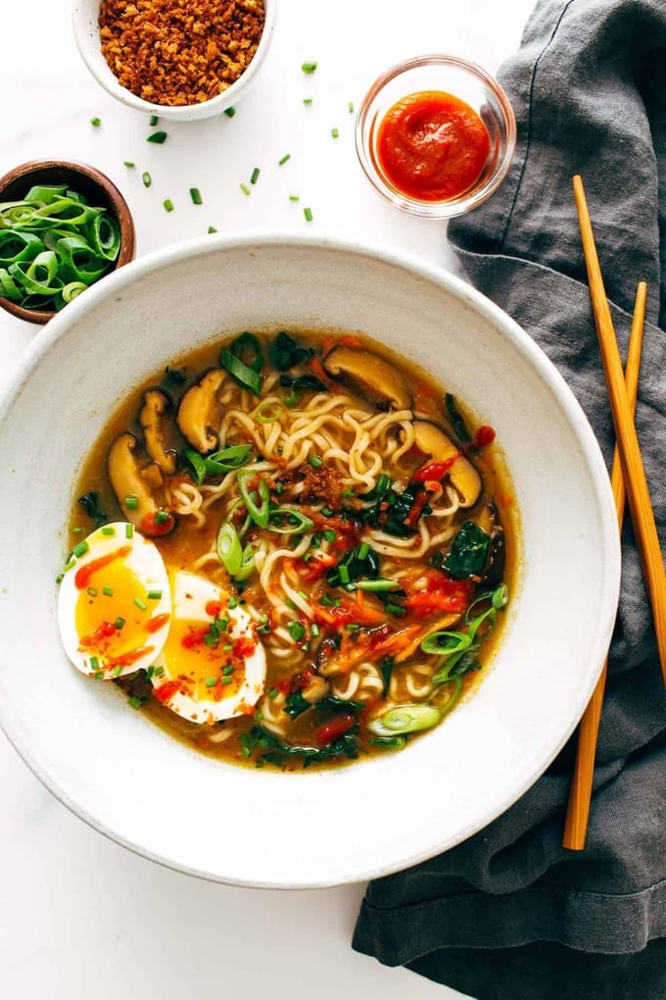

Ramen Recipe

Enjoy a home cooked, fresh bowl of ramen!
Simmering some garlic, ginger, and dried mushrooms with your
chicken broth makes for a great quickie “stock”.
A good while in the pot will get some nice flavors going that
will soon be soaked up by those noodles. And by good while,
I mean 19 minutes, because the whole thing takes 20.
The soft egg on tops will get you all the Instagram likes, and
the panko and extra chili oil or Sriracha will light your mouth up with joy.
At the end of the day, a deep bowl of bright veggies +
flavorful broth + golden panko crumbs + soft-boiled egg + chewy,
tangled noodles is not going to let you down.
Ingredients:
- 1 tablespoon sesame oil
- 3 teaspoons grated ginger
- 4 teaspoons grated garlic
- 4 cups chicken broth
- 4 cups water
- 1 ounce dried shiitake mushrooms
- 2 packages instant ramen(noodles only)
- 1/2 cup chopped scallions or chives
- 1 cups shredded carrots
- Siracha to taste
- crunchy golden panko crumbs for topping
Making the ramen:
- Heat the sesame oil in a large skillet over medium low heat. Add the garlic and ginger;
stir fry for 2 minutes or until soft and fragrant.
- Add the broth and the water. Bring to a simmer;
add the mushrooms and simmer for 10 minutes or until the
mushrooms have softened and the broth is flavorful.
- Add the instant noodles to the hot liquid and simmer for an
additional 5 minutes or until the noodles have softened.
Add the scallions and stir to combine.
- Remove from heat, stir in the kale and carrots, and top with
crunchy panko crumbs (see notes) and a soft-boiled egg (optional).
Season with chili oil, hot sauce, sesame oil, and/or soy sauce
and salt to taste.
Congrats! You now have a bowl of Ramen!